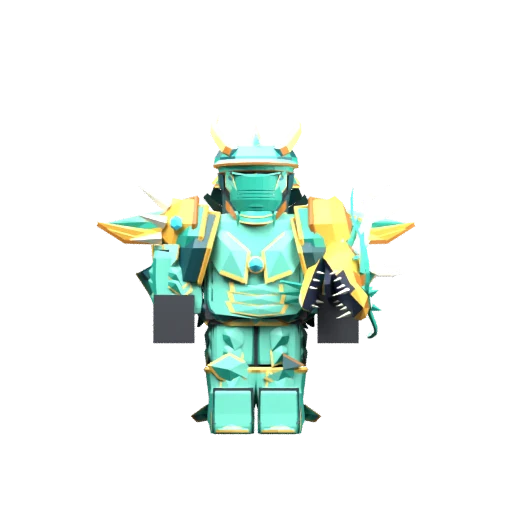
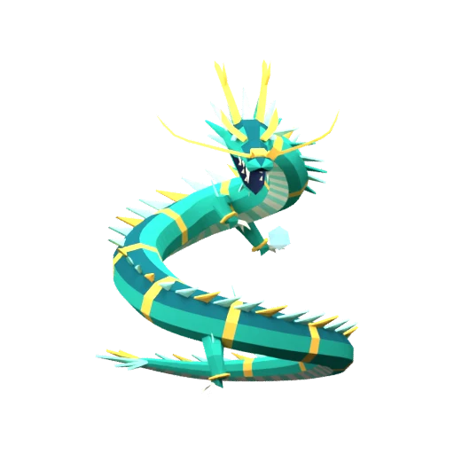
청룡 신수
- 세트 오라
- 용 리본
- 팻 스킬
- 청룡 3연타 — 칠 때 10% 확률로 3연타
광장에 흩어진 보물상자를 두드려 깨고, 나온 장비로 더 빨리 치고, 더 높은 등급 상자로 올라가는 로블록스 클리커입니다. 아래 수치는 모두 게임 코드에서 그대로 뽑았습니다.
코드 기준: treasure-box v2 a79e6e4 · 2026-11-11
D부터 SSS까지 여덟 등급. 계단 높이는 그 등급 상자를 깨는 데 필요한 타수(로그 눈금)입니다.
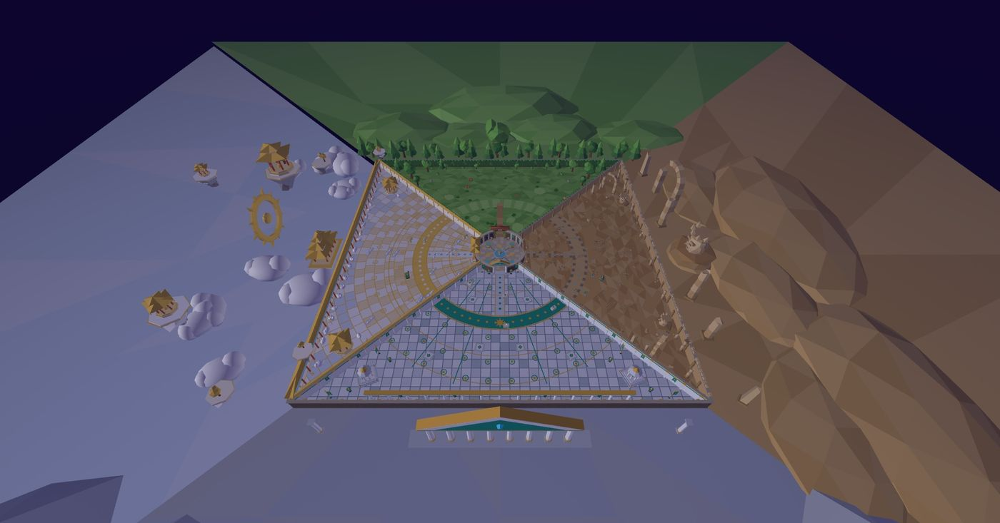
모든 장비·상자·팻이 같은 여덟 등급을 씁니다. 색은 게임 화면의 테두리 색 그대로입니다.
| 등급 | 능력치 배수 | 상자 타수 | 상자 코인 | 상자 출현 비중* | 세트 조각 몫 | 한 단계 위로 오를 몫 |
|---|---|---|---|---|---|---|
| D | ×1 | 31 | 10 | 55.1% | 0.1% | 100% |
| C | ×1.4 | 54 | 16 | 25% | 0.3% | 100% |
| B | ×1.9 | 93 | 26 | 11% | 1% | 90% |
| A | ×2.6 | 186 | 41 | 5.5% | 5% | 55% |
| A+ | ×3.3 | 1,085 | 66 | 2.4% | 20% | 15% |
| S | ×4.3 | 3,720 | 105 | 0.8% | 45% | 1% |
| SS | ×5.6 | 5,425 | 168 | 0.1% | 45% | 0.2% |
| SSS | ×7.3 | 15,500 | 268 | 0.06% | 45% | 0% |
* 출현 비중은 전체 기준값입니다. 실제로는 구역마다 그 구역의 등급 범위만 잘라 다시 100%로 나눕니다(아래 「필드」). 「세트 조각 몫」은 나온 조각이 신수 세트일 확률, 「오를 몫」은 행운·황금으로 한 등급 위가 나올 때 실제로 적용되는 비율입니다.
부위는 7개: 투구·어깨·갑옷·팔·하의·무릎·부츠. 부위마다 맡은 능력치가 하나씩 있습니다.
| 부위 | 능력치 | D +0 | A +0 | S +0 | SSS +0 | SSS +10 | 상한 | 하는 일 |
|---|---|---|---|---|---|---|---|---|
| 투구 | 행운 | 2% | 5.2% | 8.6% | 14.6% | 26.3% | 30% | 조각 등급이 한 단계 아래로 나올 몫을 한 단계 위로 옮깁니다. |
| 어깨 | 판매 보너스 | 5% | 13% | 21.5% | 36.5% | 65.7% | — | 상자 코인과 조각 판매 값이 이만큼 늘어납니다. |
| 갑옷 | 팻 공격 속도 | +4% | +50% | +230% | +1,150% | +2,070% | — | 팻이 치는 간격이 1/(1+값)로 줄어듭니다. |
| 팔 | 손 공격 속도 | +4% | +50% | +230% | +1,150% | +2,070% | — | 손으로 치는 간격이 1/(1+값)로 줄어듭니다. |
| 하의 | 황금 조각 | 1% | 2.6% | 4.3% | 7.3% | 13.1% | 25% | 이 확률로 조각이 한 등급 위로 나옵니다(오를 몫 적용). |
| 무릎 | 추가 조각 | 1% | 2.6% | 4.3% | 7.3% | 13.1% | 25% | 이 확률로 조각이 하나 더 나옵니다. |
| 부츠 | 이동 속도 | +0.6 | +1.56 | +2.58 | +4.38 | +7.88 | — | 걷기 속도(기본 16)에 더해집니다. 최대 28. |
계산: 팔·갑옷 = 등급별 속도표 × (1 + 0.08 × 강화), 나머지 = 기본값 × 등급 배수 × (1 + 0.08 × 강화). 7부위 상한은 합계 기준이며 팻 스킬 효과는 상한 뒤에 더해집니다.
| 등급 | 일반 +0 | 일반 +10 | 세트 +0 | 세트 +10 |
|---|---|---|---|---|
| D | 0.481초 · 초당 2.1회 | 0.466초 · 초당 2.1회 | 0.471초 · 초당 2.1회 | 0.457초 · 초당 2.2회 |
| C | 0.455초 · 초당 2.2회 | 0.424초 · 초당 2.4회 | 0.436초 · 초당 2.3회 | 0.407초 · 초당 2.5회 |
| B | 0.400초 · 초당 2.5회 | 0.345초 · 초당 2.9회 | 0.376초 · 초당 2.7회 | 0.324초 · 초당 3.1회 |
| A | 0.333초 · 초당 3.0회 | 0.263초 · 초당 3.8회 | 0.307초 · 초당 3.3회 | 0.242초 · 초당 4.1회 |
| A+ | 0.250초 · 초당 4.0회 | 0.179초 · 초당 5.6회 | 0.225초 · 초당 4.4회 | 0.161초 · 초당 6.2회 |
| S | 0.152초 · 초당 6.6회 | 0.097초 · 초당 10.3회 | 0.133초 · 초당 7.5회 | 0.086초 · 초당 11.7회 |
| SS | 0.081초 · 초당 12.4회 | 0.048초 · 초당 20.7회 | 0.069초 · 초당 14.4회 | 0.042초 · 초당 24.1회 |
| SSS | 0.040초 · 초당 25.0회 | 0.023초 · 초당 43.4회 | 0.034초 · 초당 29.8회 | 0.019초 · 초당 51.7회 |
기본 간격 0.5초. 세트는 같은 세트 7부위를 입었을 때로, 간격이 「가장 낮은 부위 등급 × 2%」 더 줄어듭니다. 팔 하나만 손 속도에 들어갑니다.
최대 +10. 코인으로 하고, 실패해도 잃는 건 코인뿐입니다.
| 단계 | 성공 확률 | 주문서 사용 |
|---|---|---|
| +0→+1 | 100% | 100% |
| +1→+2 | 95% | 100% |
| +2→+3 | 90% | 100% |
| +3→+4 | 80% | 100% |
| +4→+5 | 70% | 90% |
| +5→+6 | 60% | 80% |
| +6→+7 | 50% | 70% |
| +7→+8 | 40% | 60% |
| +8→+9 | 30% | 50% |
| +9→+10 | 20% | 40% |
실패해도 장비는 깨지거나 내려가지 않고, 다음 시도 확률이 +5%p 오릅니다(성공하면 초기화). 강화 주문서는 한 번에 +20%p. 강화 한 단계마다 그 장비 능력치 +8%.
강화한 장비를 팔면 들인 코인의 절반을 돌려받습니다. 세트 오라도 강화에 따라 커집니다(아래 「세트 효과」).
| 등급 | +1 | +2 | +3 | +4 | +5 | +6 | +7 | +8 | +9 | +10 | +10까지 합계 |
|---|---|---|---|---|---|---|---|---|---|---|---|
| D | 20 | 30 | 45 | 68 | 101 | 152 | 228 | 342 | 513 | 769 | 2,268 |
| C | 32 | 48 | 72 | 108 | 162 | 243 | 365 | 547 | 820 | 1,230 | 3,627 |
| B | 51 | 77 | 115 | 173 | 259 | 389 | 583 | 875 | 1,312 | 1,968 | 5,802 |
| A | 82 | 123 | 184 | 276 | 415 | 622 | 933 | 1,400 | 2,100 | 3,149 | 9,284 |
| A+ | 131 | 197 | 295 | 442 | 664 | 995 | 1,493 | 2,239 | 3,359 | 5,039 | 14,854 |
| S | 210 | 315 | 472 | 708 | 1,062 | 1,593 | 2,389 | 3,583 | 5,375 | 8,062 | 23,769 |
| SS | 336 | 503 | 755 | 1,132 | 1,699 | 2,548 | 3,822 | 5,733 | 8,600 | 12,899 | 38,027 |
| SSS | 537 | 805 | 1,208 | 1,812 | 2,718 | 4,077 | 6,115 | 9,173 | 13,759 | 20,639 | 60,843 |
비용 = 20 × 1.6^(등급−1) × 1.5^(현재 강화), 반올림.
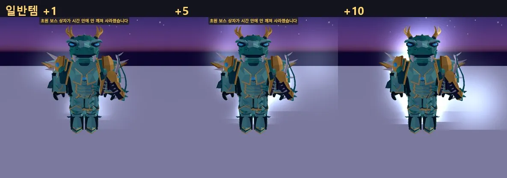
세트는 신수 5 · 시즌 5, 그 밖의 장비는 일반 테마 6종입니다.
필드 상자에서 낮은 확률로 나오는 고유 세트입니다(등급별 「세트 조각 몫」). 7부위를 모두 한 번씩 얻으면 그 신수 팻이 생깁니다. 신수 상자(상점)에서도 나옵니다.


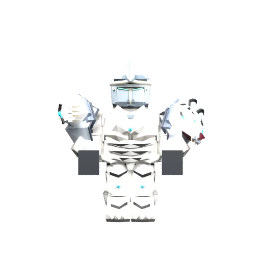
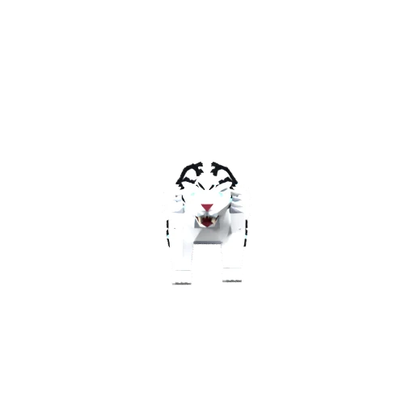
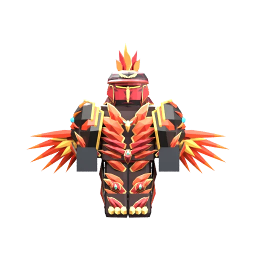
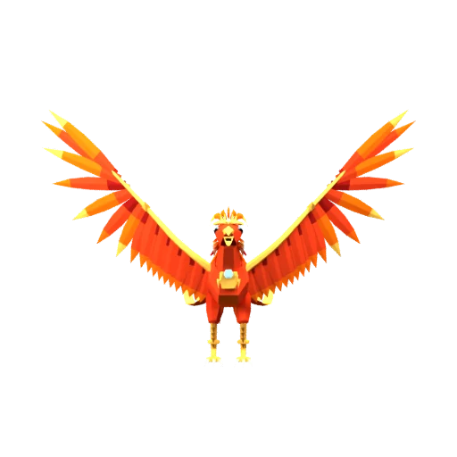
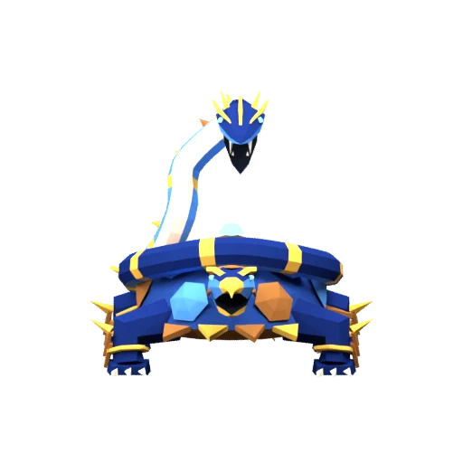
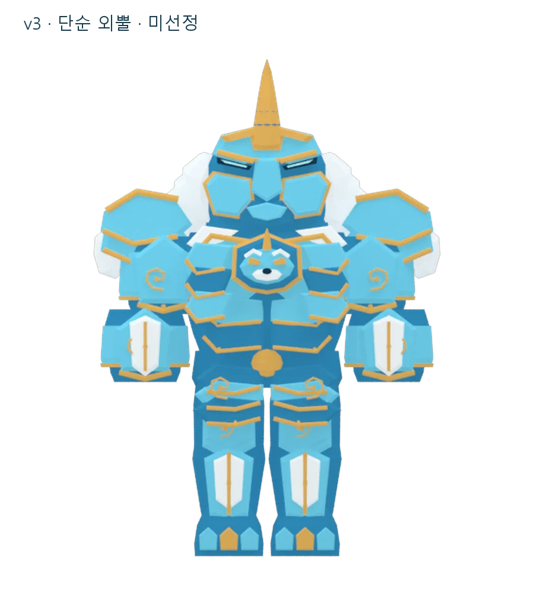
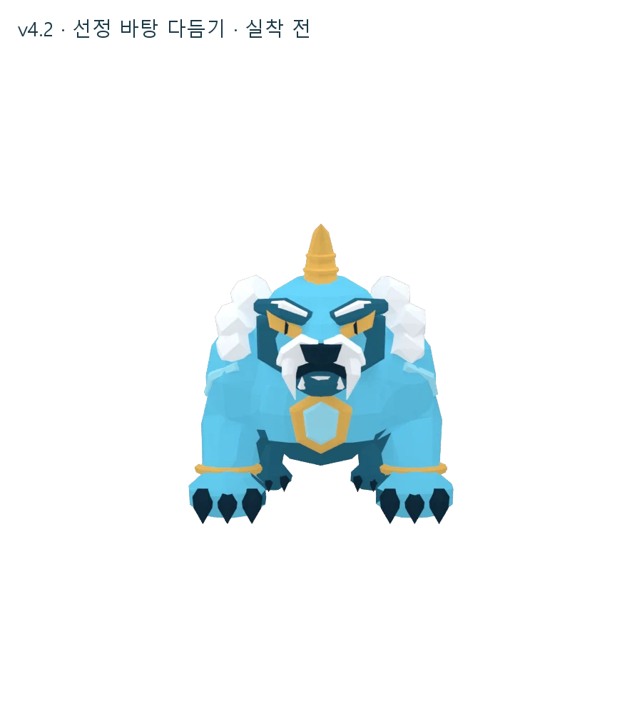
시즌 기간에만 필드 상자에서 조각이 나옵니다(S등급, 상자 등급 × 0.2%). 시즌 세트 상품(1,499 로벅스)은 그 시즌 세트 7부위를 S등급으로 줍니다. 7부위를 모으면 시즌 팻이 생깁니다.
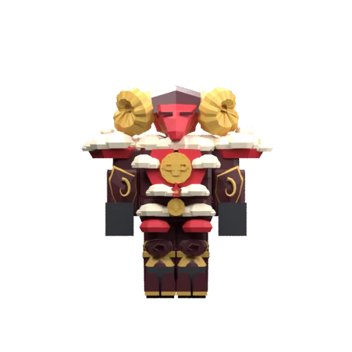
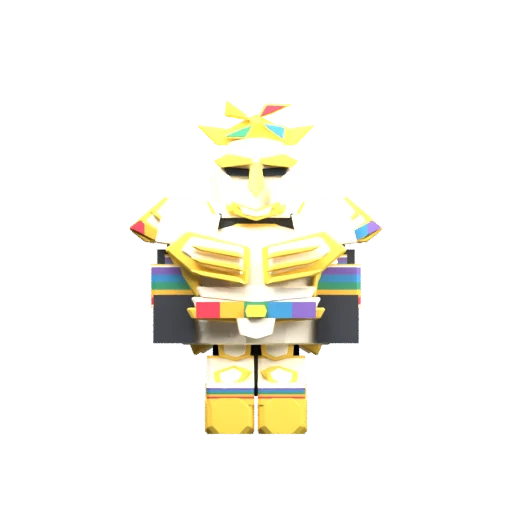
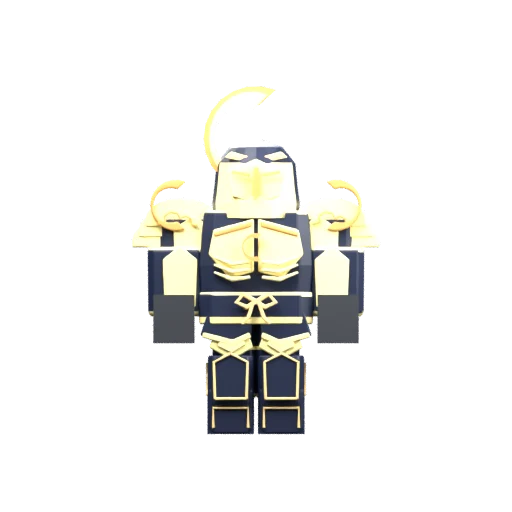
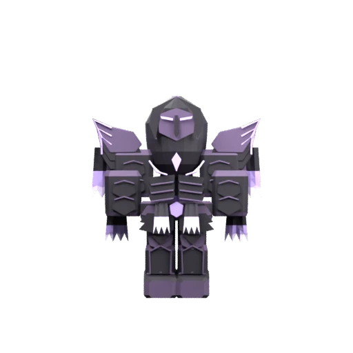
일반 장비는 여섯 테마가 고르게 나옵니다. 능력치는 테마와 상관없이 등급·강화로만 정해지고, 테마는 모양과 도감 칸·호칭에 쓰입니다. 색은 네 가지(나올 비중 70 · 18 · 9 · 3).
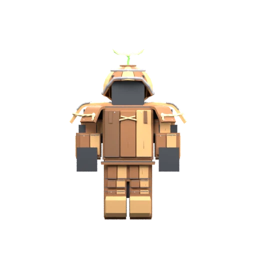
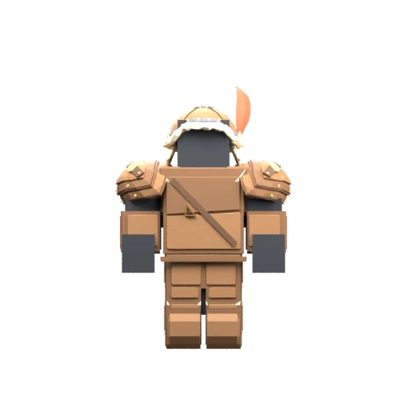
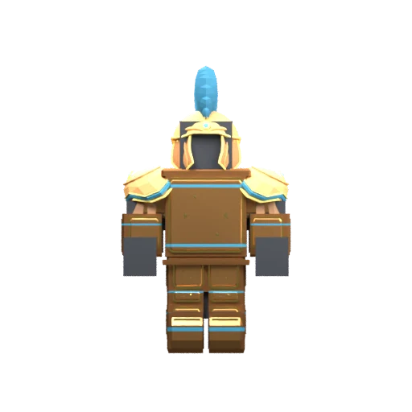
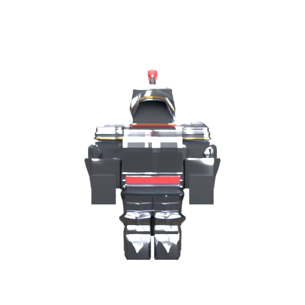
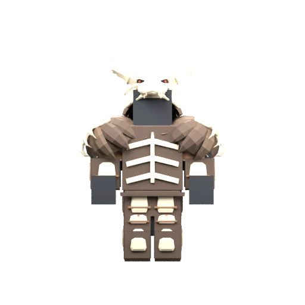
| 등급 | 바닥 고리 | 피어오르는 빛 | 불꽃 | 궤도 구슬 | 빛기둥 | 마법진 | 빛 줄기 | 몸을 감는 나선 | 번개 | 등 뒤 수정 칼날 | 세트 고유 효과 단계 | 바닥 빛 지름 |
|---|---|---|---|---|---|---|---|---|---|---|---|---|
| D | 4 | |||||||||||
| C | 1 | 1 | 4.5 | |||||||||
| B | 1 | ● | 1 | 5 | ||||||||
| A | 2 | ● | ● | 2 | 5.5 | |||||||
| A+ | 2 | ● | ● | 3 | 2 | 6 | ||||||
| S | 3 | ● | ● | 5 | ● | ● | 4 | 3 | 6.5 | |||
| SS | 3 | ● | ● | 5 | ● | ● | 6 | ● | ● | 3 | 7 | |
| SSS | 3 | ● | ● | 5 | ● | ● | 6 | ● | ● | 8 | 4 | 7.5 |
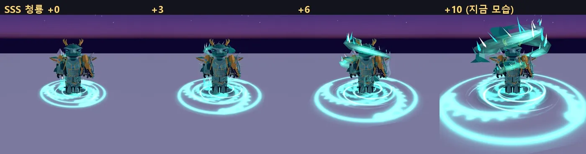
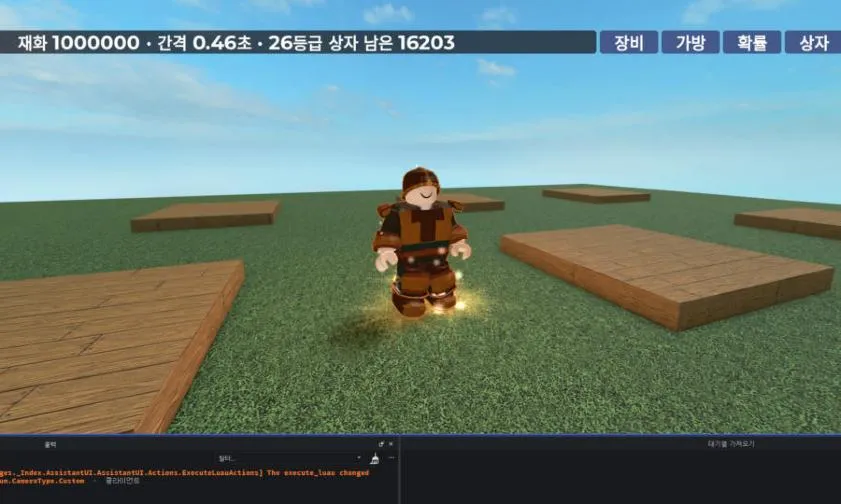
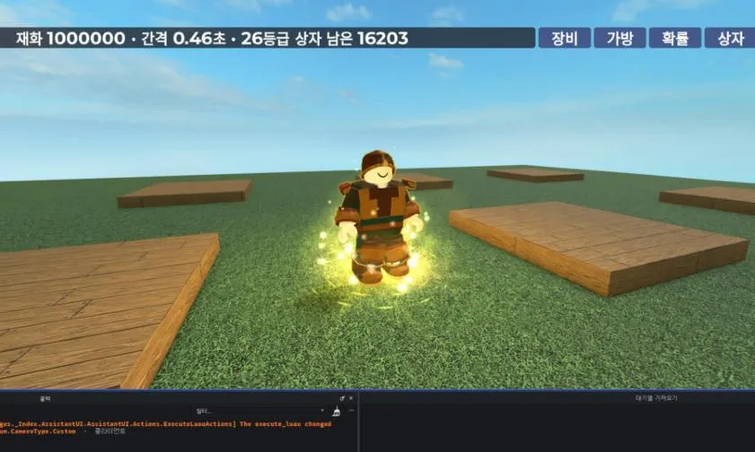
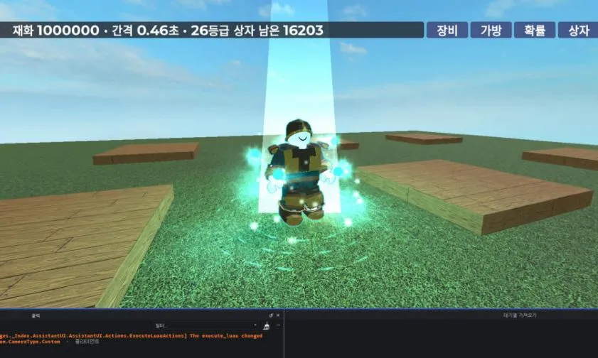
| 팻 | 스킬 | 종류 | 발동 (D 기준) | 발동 확률 (D · A · S · SSS) |
|---|---|---|---|---|
| 청룡 | 청룡 3연타 | 연타 | 칠 때 10% 확률로 3연타 | D 10% · A 16% · S 22.5% · SSS 30% |
| 백호 | 백호 분신 | 분신 | 1초마다 2.5% 확률로 분신 소환 (10초) | D 2.5% · A 4% · S 5.62% · SSS 7.5% |
| 주작 | 주작 폭주 | 손 폭주 | 1초마다 3% 확률로 손 공격 속도 2배 (8초) | D 3% · A 4.8% · S 6.75% · SSS 9% |
| 현무 | 현무 진동 | 팻 폭주 | 1초마다 3% 확률로 팻 공격 속도 3배 (8초) | D 3% · A 4.8% · S 6.75% · SSS 9% |
| 해태 | 해태 낙뢰 | 한 번에 내리꽂기 | 1초마다 3% 확률로 낙뢰 — 6초 칠 만큼 한 번에 | D 3% · A 4.8% · S 6.75% · SSS 9% |
| 새해 | 복 5연타 | 연타 | 칠 때 5% 확률로 5연타 | 고정 5% |
| 어린이날 | 꼬마 분신 | 분신 | 1초마다 2.5% 확률로 분신 2명 소환 (5초) | 고정 2.5% |
| 추석 | 보름달 폭주 | 손 폭주 | 1초마다 3.5% 확률로 손 공격 속도 1.5배 (15초) | 고정 3.5% |
| 할로윈 | 유령 질주 | 팻 폭주 | 1초마다 3% 확률로 팻 공격 속도 2배 (15초) | 고정 3% |
| 크리스마스 | 선물 폭탄 | 한 번에 내리꽂기 | 1초마다 2% 확률로 선물 폭탄 — 8초 칠 만큼 한 번에 | 고정 2% |
신수 팻은 각성 등급의 배수(아래)가 발동 확률에 곱해집니다. 상한은 연타 60%, 나머지 30%. 시즌 팻은 각성이 없어 고정입니다.
효과: 연타 = 그 클릭에 추가 타. 분신 = 지속시간 동안 분신이 손 속도로 같이 칩니다. 손 폭주 = 손 공격 속도 배수. 팻 폭주 = 팻 공격 속도 배수. 내리꽂기 = 「손으로 N초 칠 만큼」의 타수가 한 번에 들어갑니다.
| 각성 | 스킬 확률 배수 | 키 (캐릭터 = 1배) |
|---|---|---|
| D | ×1 | 0.5배 (2.6스터드) |
| C | ×1.2 | 0.6배 (3.1스터드) |
| B | ×1.4 | 0.72배 (3.7스터드) |
| A | ×1.6 | 0.86배 (4.5스터드) |
| A+ | ×1.9 | 1.02배 (5.3스터드) |
| S | ×2.25 | 1.25배 (6.5스터드) |
| SS | ×2.6 | 1.55배 (8.1스터드) |
| SSS | ×3 | 2배 (10.4스터드) |
신수 팻은 처음 생길 때 D에서 시작합니다. 한 단계 올리려면 지금보다 한 등급 이상 높은 그 세트 조각을 7부위 모두 다시 얻어야 합니다(자동 판매된 조각도 셉니다). 한 번에 한 단계씩.
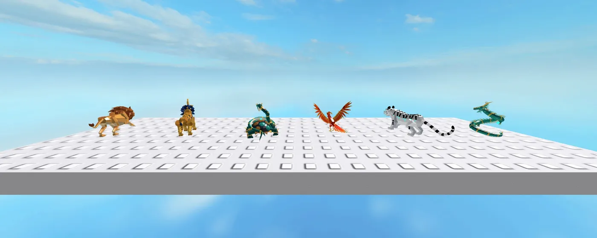
필드 상자를 깰 때 상자 등급 × 0.2% 확률로 나옵니다(D 0.2% ~ SSS 1.6%). 아직 상자 팻이 하나도 없으면 8배(첫 팻 맛보기). 같은 팻이 또 나오면 그 팻의 영혼 1개가 되고, 영혼으로 등급을 올립니다: D→C 1개 → C→B 2개 → B→A 3개 → A→A+ 5개 → A+→S 7개 → S→SS 10개 → SS→SSS 15개. 상자 팻 등급은 키와 빛만 바꾸고 스킬은 없습니다. 키는 신수 팻과 같은 표를 따릅니다(D = 캐릭터의 절반 → SSS = 캐릭터의 2배).
| 이름 | 팻 상자 비중 | |
|---|---|---|
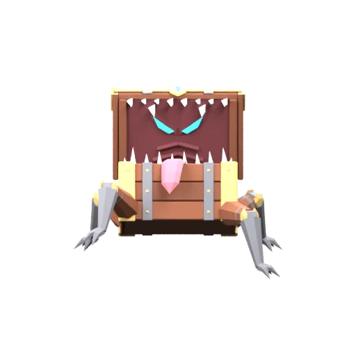 | 금아귀 파수괴 | 3 |
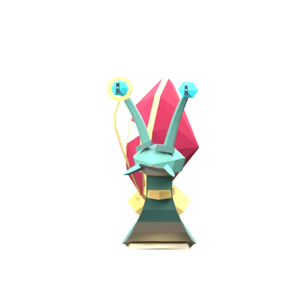 | 보석 달팽이 | 3 |
| 동전 두더지 | 3 | |
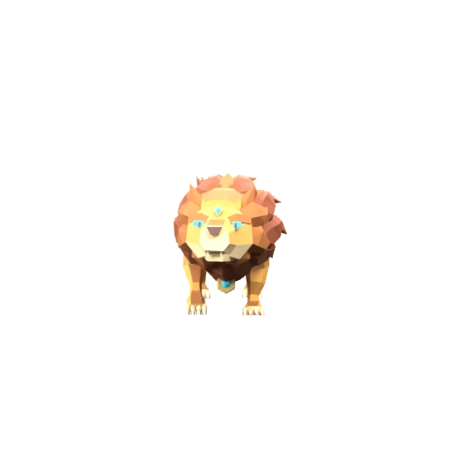 | 해륜 수호사자 | 2 |
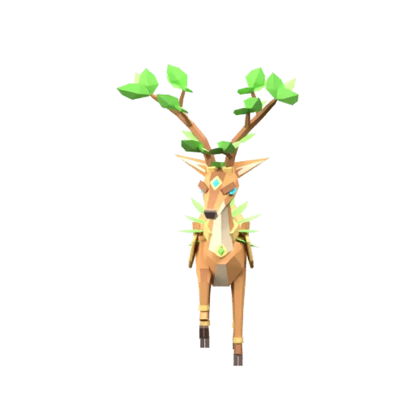 | 새싹 사슴 | 2 |
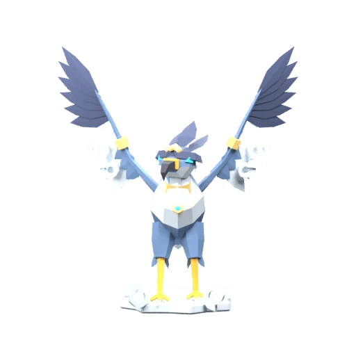 | 구름 매 | 2 |
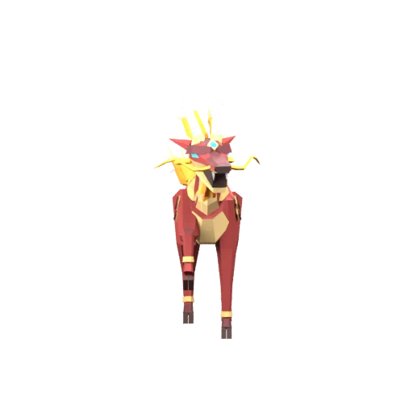 | 불씨 기린 | 2 |
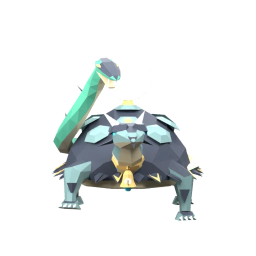 | 달방울 현무 | 2 |
팻 상자(상점 149 로벅스)는 상자 팻 8종만 나오고, 이미 가진 팻은 빠집니다. 8종을 다 가졌으면 대신 강화 주문서 15장.
팻 자리: 따라다닐 때는 오른쪽 뒤 · 왼쪽 뒤 · 바로 뒤, 상자를 칠 때는 캐릭터 반대쪽(상자 양옆과 뒤)에 섭니다. 팻마다 실제 몸 크기를 재서 캐릭터 · 다른 팻 · 상자와 겹치지 않게 떨어지고, 각성으로 커지면 그만큼 더 떨어집니다.
광장 한 서버 최대 24명. 가운데 광장에서 네 구역으로 갈라집니다.
| 구역 | 들어가는 조건 | 나오는 상자 (구역 안 비중) | 보스 상자 | 상자 모습 |
|---|---|---|---|---|
| 초원 | 처음부터 · A+ 미만 | D 낡은 나무상자 57.1% C 쇠테 궤짝 25.9% B 들꽃 덩굴함 11.4% A 목동왕의 청동함 5.69% | 초원의 거목궤 | 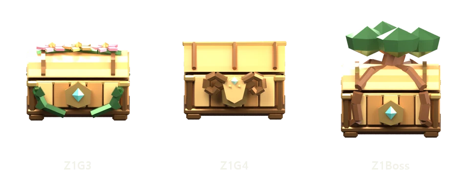 |
| 유적 | 평균 B 이상 · SS 미만 | C 이끼 낀 돌상자 56.9% B 모래 묻은 석함 25.1% A 옛 왕의 청동궤 12.5% A+ 잠든 왕의 은궤 5.47% | 잠든 왕의 석관 | 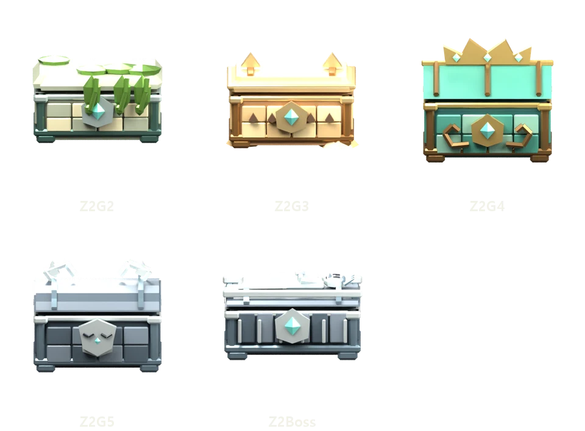 |
| 신전 | 평균 A+ 이상 | A 대리석 공물함 62.5% A+ 사제의 은함 27.3% S 성소의 금궤 9.09% SS 신탁의 뇌정궤 1.14% | 신전 대보물궤 | 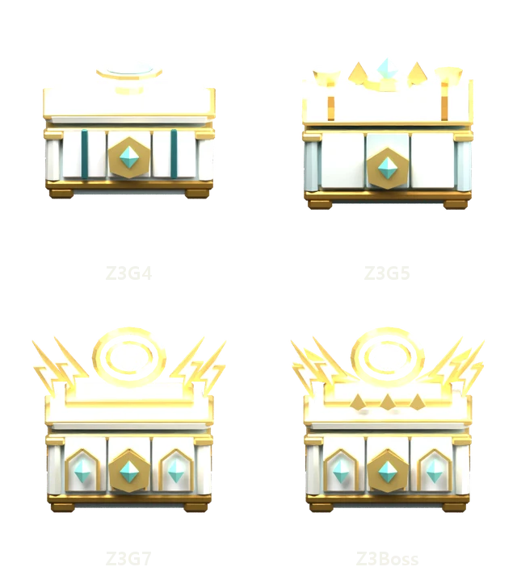 |
| 천궁 | 평균 SS 이상 | S 구름 금궤 83.3% SS 용무늬 비취궤 10.4% SSS 천제의 무지개궤 6.25% | 천제의 보물고 | 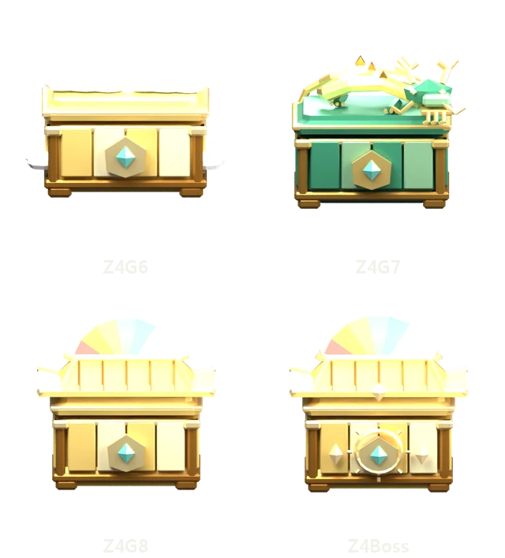 |
평균 = 7부위 등급(D=1 … SSS=8)의 평균, 빈 부위는 0. 아래 구역에는 상한이 있어서 장비가 좋아지면 위 구역으로 올라가야 합니다(같은 자리에서 낮은 상자만 쓸어 담지 못하게). 광장(가운데)에 있으면 열린 구역 중 가장 높은 곳으로 셉니다.
| 상자 | 코인 | 주문서 | 상자 팻 | 시즌 조각 |
|---|---|---|---|---|
| D | 10 | 1% | 0.2% | 0.2% |
| C | 16 | 2% | 0.4% | 0.4% |
| B | 26 | 3% | 0.6% | 0.6% |
| A | 41 | 4% | 0.8% | 0.8% |
| A+ | 66 | 5% | 1% | 1% |
| S | 105 | 6% | 1.2% | 1.2% |
| SS | 168 | 7% | 1.4% | 1.4% |
| SSS | 268 | 8% | 1.6% | 1.6% |
각 구역에 10분마다 나타나 5분 안에 깨야 합니다. 필요 타수 = 기준 × (그 구역 사람 수 + 0.5). 기준: 초원 250 · 유적 600 · 신전 1,320 · 천궁 2,480. 깨지면 친 몫이 5% 이상인 모두가 보상 1번, 상위 3명은 2번. 보상 한 번 = 그 구역 상자 두 개를 굴려 좋은 쪽.
보스 상자는 폭 40스터드(SSS 상자의 2.5배)이고, 그 자리에 하늘까지 600스터드 빛기둥(구역 보스 등급 색)이 서서 맵 어디서든 보입니다. 보스가 내려앉는 자리에 있던 빈 상자는 치워지고 다른 곳에 다시 놓입니다.
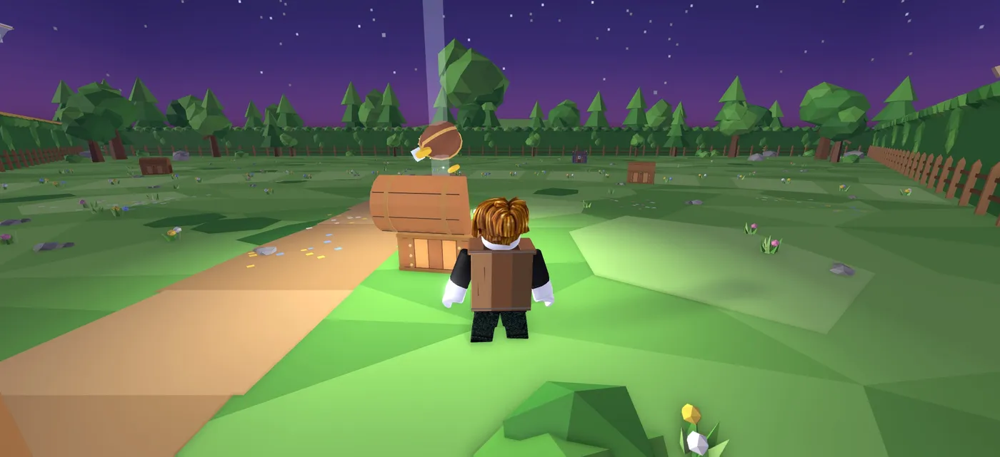
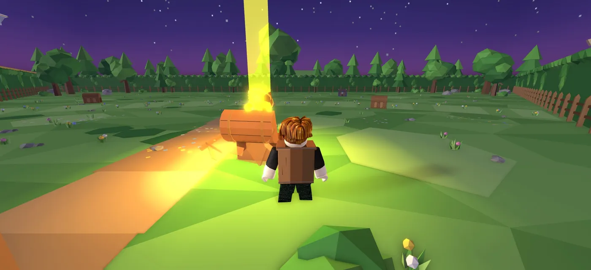
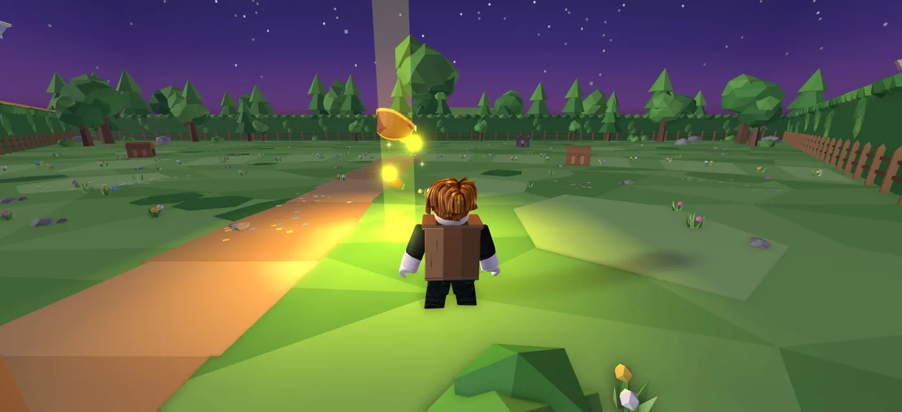
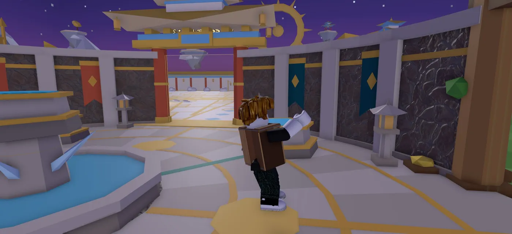
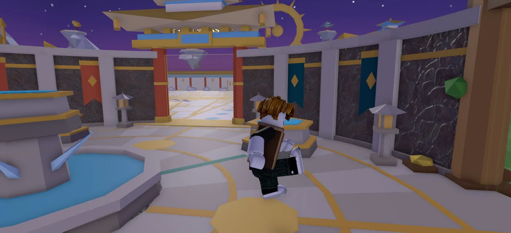
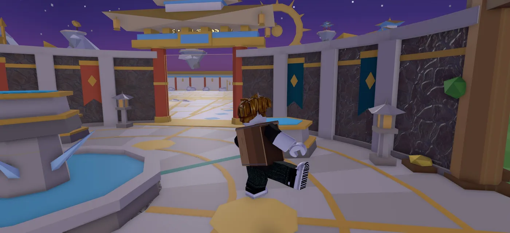
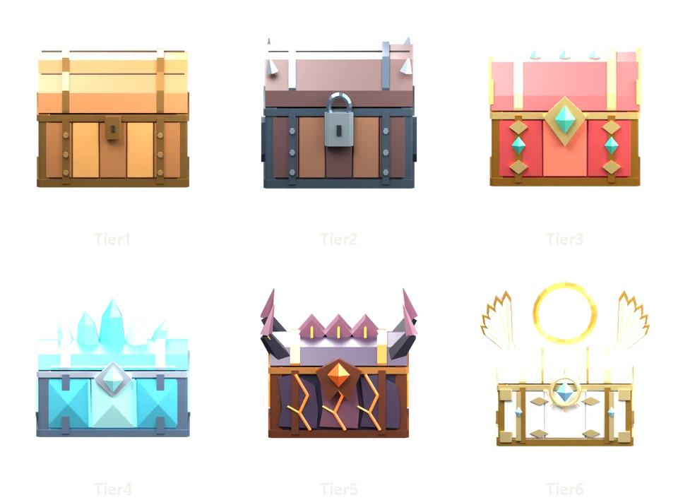
| 연속 출석 | 코인 | 강화 주문서 |
|---|---|---|
| 1일째 | 20상자 | — |
| 2일째 | 30상자 | — |
| 3일째 | 30상자 | 1장 |
| 4일째 | 40상자 | — |
| 5일째 | — | 2장 |
| 6일째 | 50상자 | — |
| 7일째 | 80상자 | 3장 |
한국 시간 하루 첫 접속에 받습니다. 하루 빠지면 1일째부터, 7일째 다음은 다시 1일째(연속 일수는 계속 셉니다). 「n상자」 = 내가 갈 수 있는 가장 높은 구역의 가장 낮은 상자 n개 값의 코인이라, 단계가 올라도 값어치가 유지됩니다.
| 미션 후보 (하루 3개) |
|---|
| 상자 40개 깨기 |
| 손으로 300번 치기 |
| 조각 20개 팔기 |
| 강화 3번 하기 |
| 새 도감 1칸 채우기 |
| 보스 상자 1번 함께 깨기 |
매일 여섯 중 세 개(모두 같은 세 개). 하나 끝낼 때마다 25상자 값의 코인, 세 개를 다 끝내면 주문서 +1.
구독 맛보기 — 세 개를 다 끝낸 날 차례로: 1번째 날: 자동 공격 1일 체험 · 2번째 날: 팻 칸 2 3일 체험. 계정당 한 번씩이고, 체험 중에는 구독과 똑같이 작동합니다(오프라인 정산은 실제 구독만).
| 도감 | 코인 | 주문서 |
|---|---|---|
| 10칸 | 20상자 | 1장 |
| 25칸 | 30상자 | 1장 |
| 50칸 | 40상자 | 2장 |
| 100칸 | 60상자 | 2장 |
| 150칸 | 80상자 | 3장 |
| 200칸 | 100상자 | 3장 |
| 300칸 | 130상자 | 4장 |
| 400칸 | 160상자 | 5장 |
| 500칸 | 200상자 | 6장 |
| 651칸 | 400상자 | 10장 |
도감 칸 = 테마 × 부위 × 등급. 전체 651칸. 시즌 세트는 S등급 칸만 셉니다. 팔거나 자동 판매해도 한번 채운 칸은 사라지지 않습니다.
캐릭터 머리 위에 「호칭의 이름」으로 붙습니다. 직접 골라 쓰고, ★표시는 얻는 순간 서버 전체에 알려집니다.
| 호칭 | 얻는 법 |
|---|---|
| 새내기 수집가 | 도감 50칸 채우기 |
| 수집가 | 도감 200칸 채우기 |
| 대수집가 | 도감 400칸 채우기 |
| 행운아 | SSS급 장비 처음 얻기 |
| 나무꾼 | 나무 7부위 모두 모으기 |
| 무두장이 | 가죽 7부위 모두 모으기 |
| 청동 전사 | 청동 7부위 모두 모으기 |
| 사슬 기사 | 체인 7부위 모두 모으기 |
| 강철 기사 | 풀아머 7부위 모두 모으기 |
| 해골 전사 | 뼈 7부위 모두 모으기 |
| 새해 | 새해 시즌 세트 7부위 모두 모으기 |
| 어린이날 | 어린이날 시즌 세트 7부위 모두 모으기 |
| 추석 | 추석 시즌 세트 7부위 모두 모으기 |
| 할로윈 | 할로윈 시즌 세트 7부위 모두 모으기 |
| 크리스마스 | 크리스마스 시즌 세트 7부위 모두 모으기 |
| 청룡 | 청룡 세트 7부위 모두 모으기 |
| 백호 | 백호 세트 7부위 모두 모으기 |
| 주작 | 주작 세트 7부위 모두 모으기 |
| 현무 | 현무 세트 7부위 모두 모으기 |
| 해태 | 해태 세트 7부위 모두 모으기 |
| 팻 부자 | 상자 팻 8종 모두 얻기 |
| 신수 조련사 | 신수 팻 5종 모두 얻기 |
| ★ 영혼 술사 | 상자 팻 하나를 SSS 등급까지 올리기 |
| ★ 만물 | 일반 테마 세트 6종 모두 모으기 |
| ★ 사계절 | 시즌 세트 5종 모두 모으기 |
| ★ 오신수 | 신수 세트 5종 모두 모으기 |
| ★ 황금 청룡 | 청룡 세트 7부위 모두 SSS급으로 모으기 |
| ★ 황금 백호 | 백호 세트 7부위 모두 SSS급으로 모으기 |
| ★ 황금 주작 | 주작 세트 7부위 모두 SSS급으로 모으기 |
| ★ 황금 현무 | 현무 세트 7부위 모두 SSS급으로 모으기 |
| ★ 황금 해태 | 해태 세트 7부위 모두 SSS급으로 모으기 |
| ★ 전설 | 신수·일반 장비 모든 부위를 SSS급으로 모으기 |
| ★ 도감 정복자 | 도감 모든 칸 채우기 |
같은 서버의 로블록스 친구 1명마다 상자 코인 +5%, 최대 4명(+20%).
게임은 무료이고, 구독·상품은 속도와 편의를 삽니다. 가격 단위는 로벅스.
| 구독 | 로벅스 | 하는 일 |
|---|---|---|
| 자동 공격 | 299 / 월 | 차지한 상자를 손 공격보다 1.4배 빠르게 자동으로 칩니다. 꺼져 있어도(접속 안 해도) 최대 12시간까지 정산. |
| 팻 칸 2 | 499 / 월 | 팻을 2마리 데리고 다닙니다. |
| 팻 칸 3 | 499 / 월 | 3마리. |
| 상품 | 로벅스 | 내용 |
|---|---|---|
| 장비 스타터팩 | 799 | 일반 테마 하나를 골라 7부위 A등급 + 주문서 5장 (한 번만) |
| 주문서 5장 | 99 | |
| 주문서 15장 | 249 | |
| 시즌 세트 | 1,499 | 그 시즌 세트 7부위 S등급 (시즌 중에만) |
| 상자 | 로벅스 | 열리는 때 | 등급 확률 |
|---|---|---|---|
| 일반 A 상자 | 49 | 처음부터 | B 40% · A 45% · A+ 13% · S 2% |
| 일반 S 상자 | 149 | 유적 입장 조건을 한 번 넘긴 뒤 | A+ 40% · S 45% · SS 13% · SSS 2% |
| 신수 상자 | 99 · 10+1 899 | 신전 입장 조건을 한 번 넘긴 뒤 | B 45% · A 38% · A+ 13% · S 3.5% · SS 0.5% 천장: 10번 연속 A 미만이면 다음은 A 이상 |
| 팻 상자 | 149 | 처음부터 | 상자 팻 8종 (위 비중, 가진 팻 제외) |
일반 상자는 일반 테마 6종, 신수 상자는 신수 세트 5종에서 부위·테마가 고르게 나옵니다. 로블록스 정책상 유료 뽑기가 막힌 지역에서는 뽑기·주문서 상품이 보이지 않습니다.
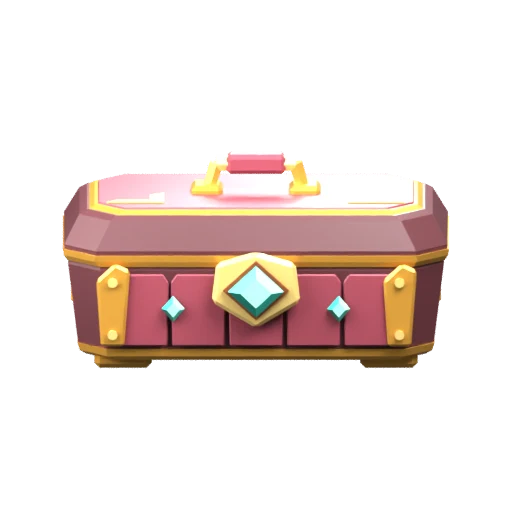
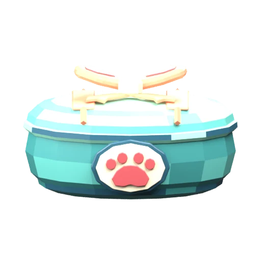
2026-11-11 출시 전 재시험. 전체 시험 53개 통과.
| 도달 목표 | 무료 (팻 1칸) | 구독 (자동 공격 + 팻 3칸) | 구독 / 무료 |
|---|---|---|---|
| 첫 상자 팻 | 18분 | 8분 | 0.47배 |
| 첫 A 장비 | 8분 | 4분 | 0.54배 |
| 첫 S | 3시간 9분 | 1시간 38분 | 0.52배 |
| 첫 SS | 5시간 9분 | 2시간 46분 | 0.54배 |
| 첫 SSS | 27시간 41분 | 12시간 51분 | 0.46배 |
| 첫 신수 팻 | 10시간 7분 | 5시간 8분 | 0.51배 |
| 신수 세트 S 7부위 | 20시간 47분 | 9시간 56분 | 0.48배 |
| 신수 세트 SSS 7부위 | 66시간 11분 | 31시간 58분 | 0.48배 |
시뮬레이션: 실제 보상 코드를 그대로 돌린 접속 시간 기준 중앙값(48회). 오프라인 정산은 빼고 셈. 기준선 — 무료: 첫 A 3~8분, 첫 S 2.8~3.8시간, 신수 팻 8.7~11.8시간, SSS 21.8~29.6시간. 구독: 무료의 0.4~0.6배(약 절반).
11-11 조정: 구독 도달시간은 그대로 두고 무료를 약 2배 느리게 했습니다(상자 타수 ×1.55). 자동 공격은 손보다 1.4배 빠르게 바뀌었습니다(전엔 손의 절반 속도).